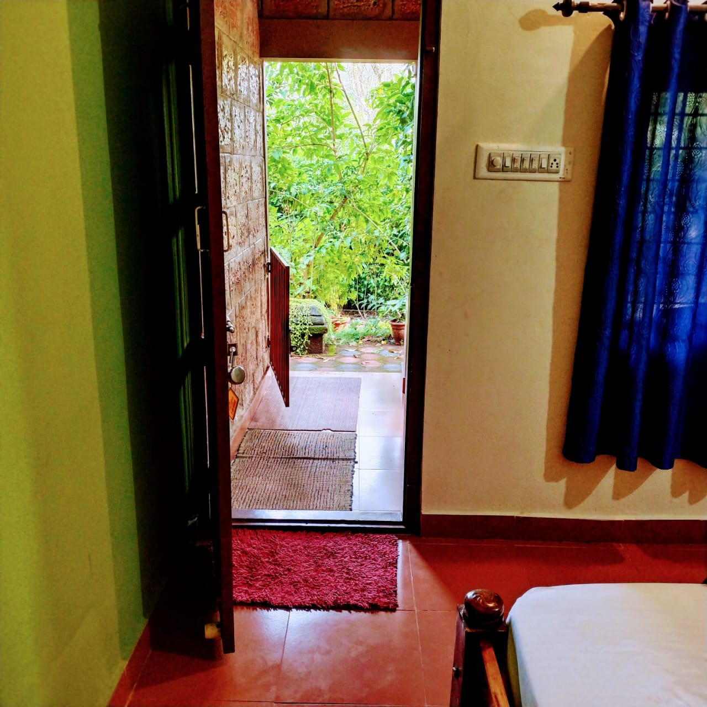
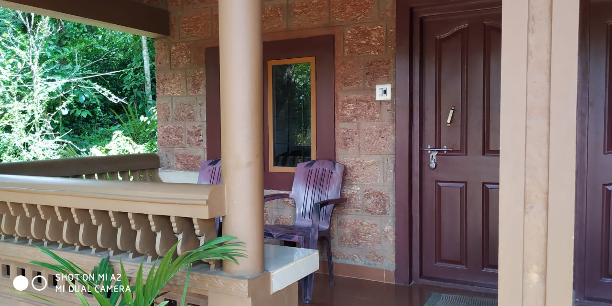
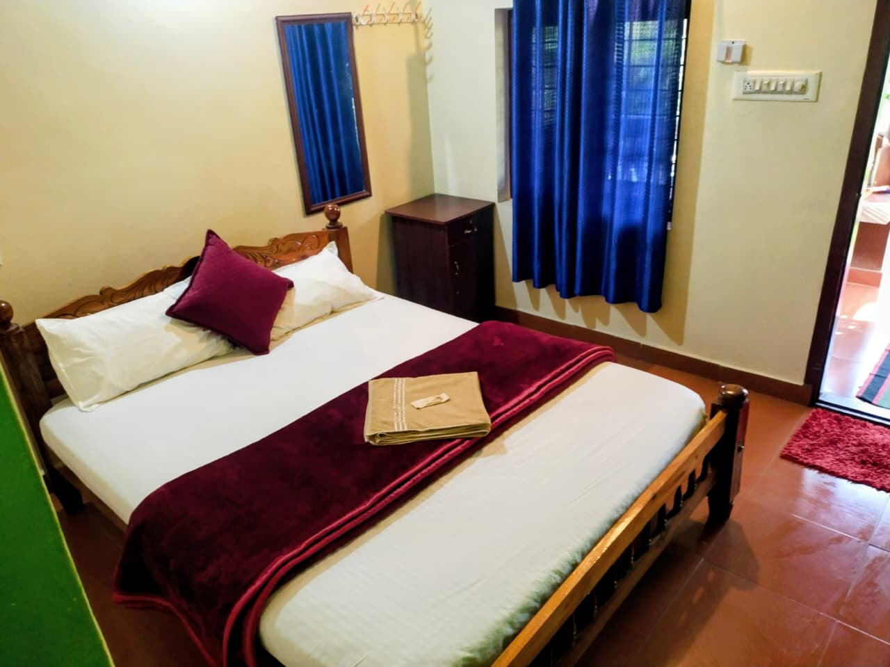
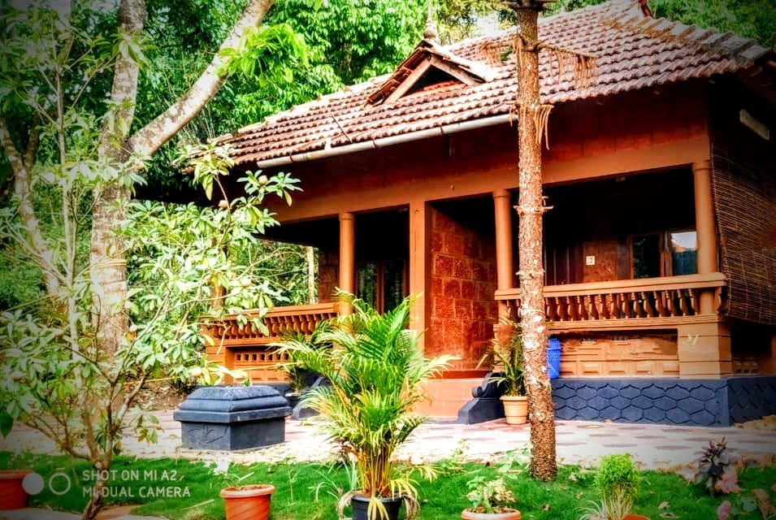
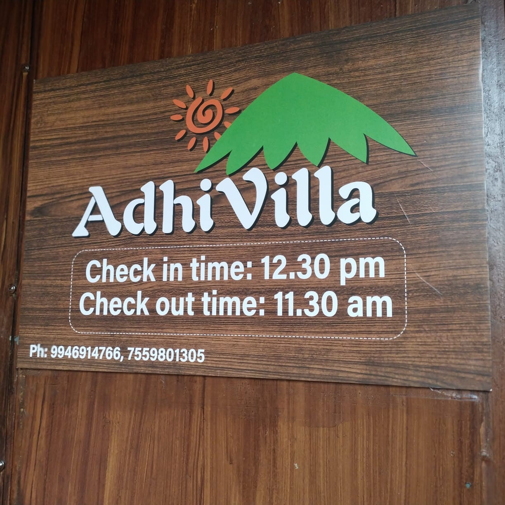
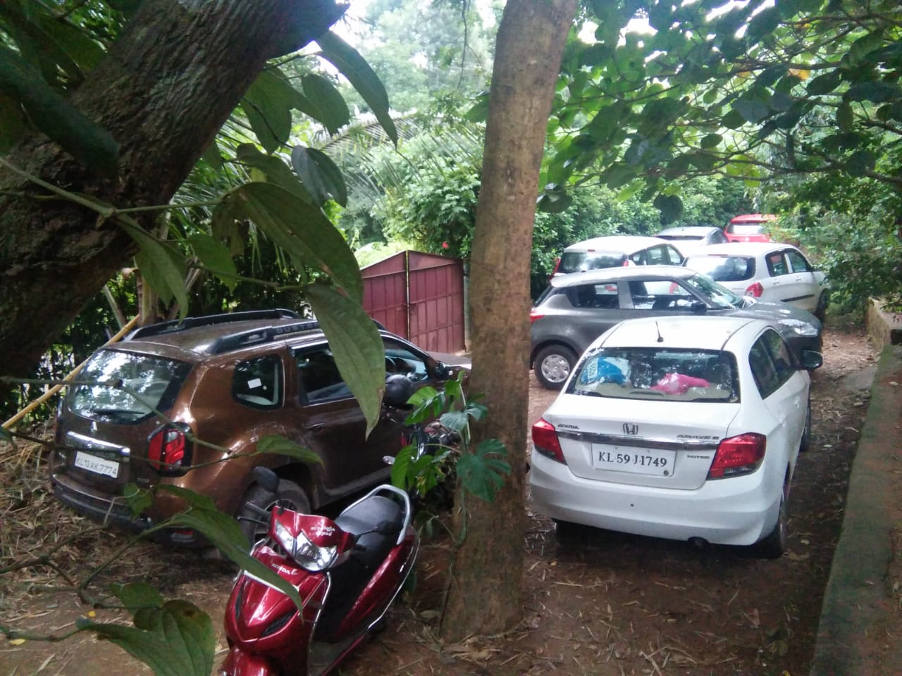
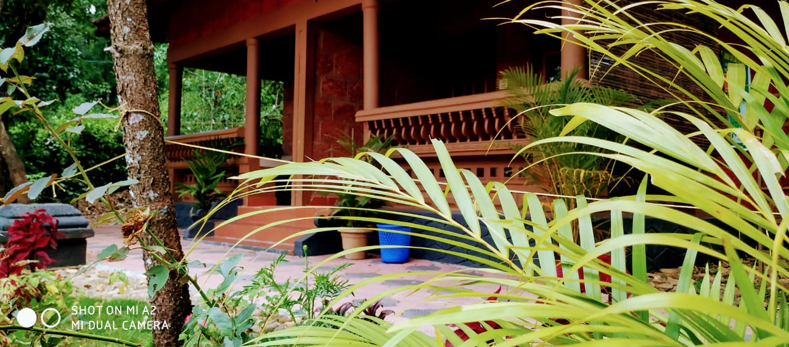
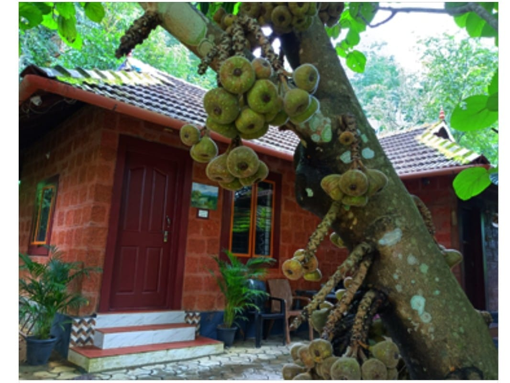

01
Riverside Cottage
Wake up beside the water, with the landscape close around you.
THIRUNELLI · WAYANAD · KERALA
A quiet stay in the green edge of Wayanad — close to Brahmagiri, Thirunelli Temple, the river and the wild.
Adhi Villa sits in the quieter side of Thirunelli, surrounded by trees, hills and the sounds of village life. Come for a few slow days, a mountain trek, a wildlife adventure or simply the feeling of being away.
Traditional Kerala character. Forest air. Local food. Space to breathe.
Choose the kind of space that fits your journey.
Wake up beside the water, with the landscape close around you.
Stay above the forest floor and let the trees become part of the room.
Room to slow down together, surrounded by greenery.
Your own quiet base for exploring Thirunelli and the hills beyond.
Good travel is also about eating where you are. At Adhi Villa, the food story begins with Kerala — familiar flavours, local cooking and meals that belong to the landscape.
Menu and meal options can be arranged around your stay.
Ask about food →Trek through the hills and forest around Thirunelli.
Explore the northern Wayanad forest landscape on a safari.
Visit the ancient temple and walk down towards Papanasini.
A rugged forest trek towards caves and highland wilderness.
Thirunelli sits close to the Kerala–Karnataka border. From here, the landscape opens towards Kutta, Iruppu and the forest country around Nagarhole.
Ask us to shape a day around your interests — wildlife, waterfalls, temples, villages or simply a scenic drive.
Stay away from the busy centre and use Adhi Villa as your base for the forest, village and mountain country of northern Wayanad.
Get directions & plan →







Tell us your dates and what kind of experience you're looking for. We'll take it from there.